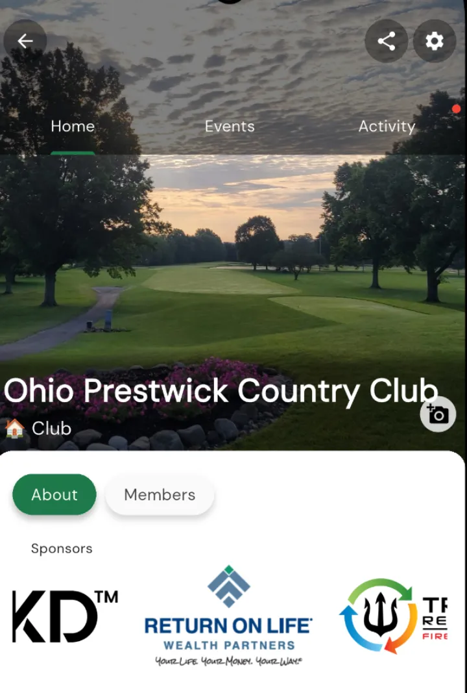
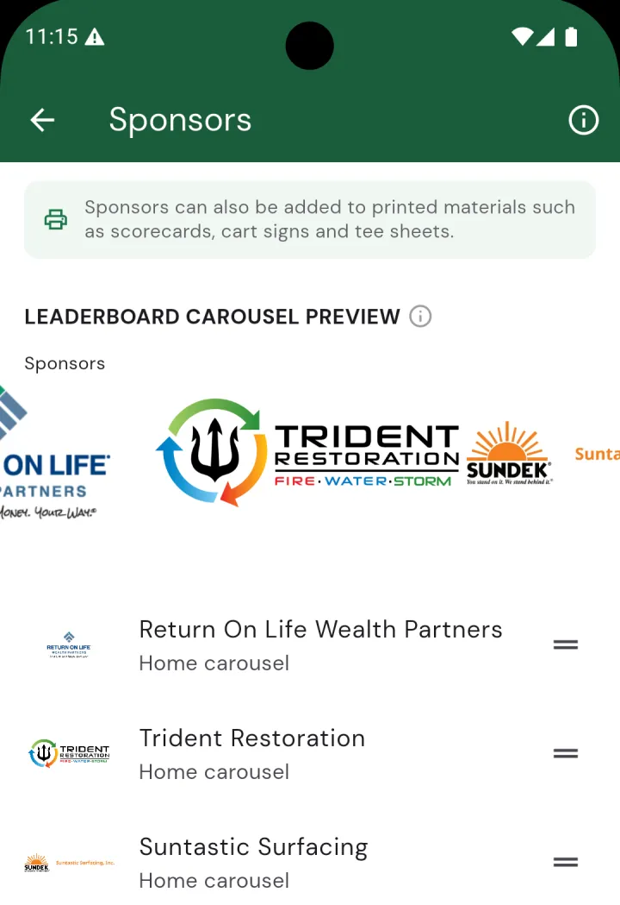
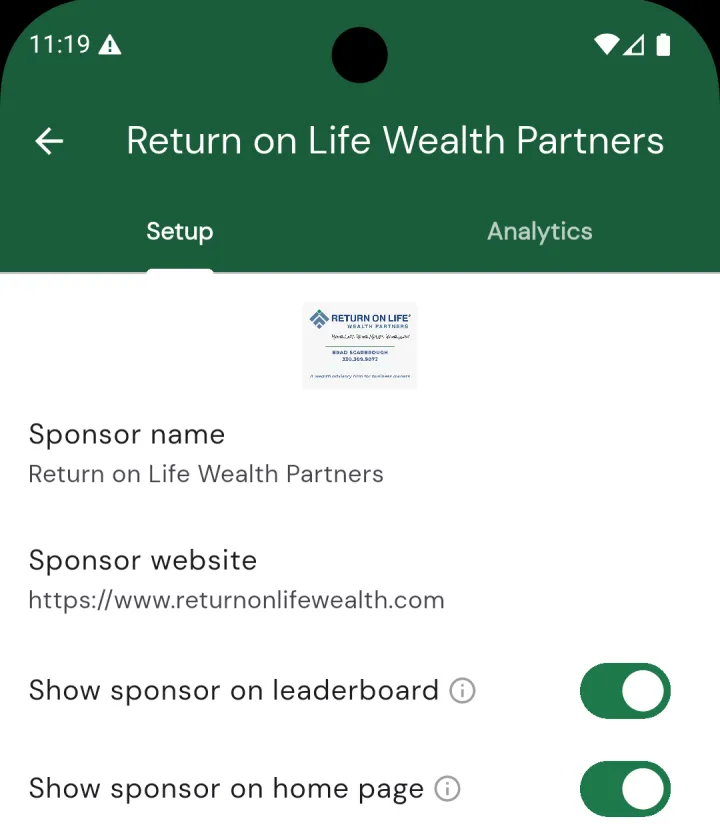
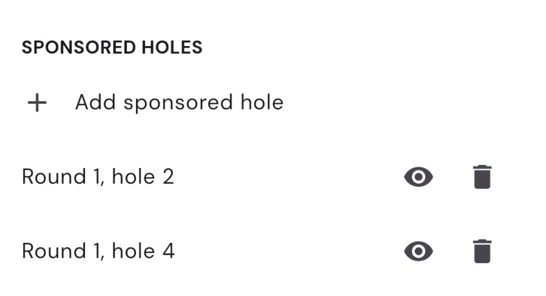
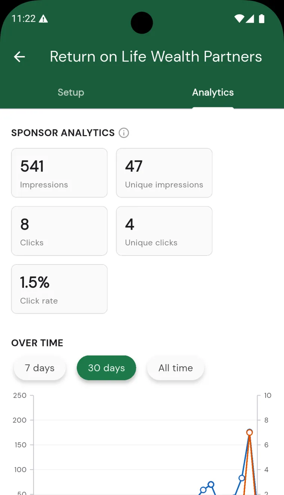

Adding sponsor logos and banners
Sponsors help pay for your event, and Squabbit gives them plenty of places to be seen. Add a sponsor once and its logo can rotate through the leaderboard and home-page carousels, sit on individual holes, and print on your scorecards, cart signs and tee sheets, all from a single sponsor record. You can even see how many times each sponsor was shown and tapped.
This article walks through adding a sponsor, choosing where it appears, assigning it to holes, reading its analytics, and reusing sponsors you’ve already set up.

Where sponsors appear
A sponsor logo can show up in several spots, and you decide which ones per sponsor:
- Leaderboard carousel. A scrollable strip of sponsor logos above the leaderboard. Everyone viewing the tournament sees it, and tapping a logo opens that sponsor’s website.
- Home carousel. The same rotating logos on the tournament’s home page.
- On selected holes. Assign a sponsor to specific holes and its logo appears on that hole’s scorecard entry when players are keeping score.
- Printed assets. Sponsor logos can print across the top of your scorecards, cart signs, tee sheets, hole competition sheets and brackets.
When there’s more than one sponsor, the carousels auto-play through the logos and loop, so every sponsor gets screen time.
Adding a sponsor
Open your tournament, tap the gear icon to open settings, and find the row. This opens the Sponsors page, where you tap the green + button and choose Create new sponsor.

On the sponsor setup screen you’ll fill in:
- Logo. Tap to pick an image from your phone and upload it. The logo is what shows in the carousels, on holes and on printed assets, so a clean, wide logo on a transparent or white background works best. A logo is required.
- Sponsor name. The name is required and is used as the label for the sponsor throughout the app and in its analytics.
- Sponsor website. Optional. When set, tapping the sponsor’s logo in a carousel or on a hole opens this link in the browser. Enter it like
https://www.sponsor.com. - Show sponsor on leaderboard. Include this sponsor in the leaderboard carousel.
- Show sponsor on home page. Include this sponsor in the home-page carousel.

Tap Add in the top corner to save the new sponsor. It appears in the list, and a live preview of the leaderboard carousel shows at the top of the Sponsors page so you can see exactly what participants and spectators will see.
To change a sponsor later, tap it in the list. Edits save automatically when you back out. To remove one, open it and tap the red Remove sponsor row at the bottom.
Assigning sponsors to holes
You can tie a sponsor to specific holes so its logo shows up when players are scoring that hole: perfect for a “this hole sponsored by” placement. Open the sponsor, scroll to the Sponsored holes section, and tap Add sponsored hole.
You’ll pick which tournament round the hole belongs to, then the hole number. Squabbit offers the round’s actual hole numbers, so a back-nine round offers holes 10–18 and a nine-hole card offers 1–9. Add as many holes as you like across any of your rounds. Tap the eye icon next to a hole to preview how the sponsor looks on that hole’s scorecard entry, or the trash icon to remove the assignment.

Printing sponsor logos
Choosing which sponsors print is handled on the Print assets page rather than the sponsor form. When you go to print your tournament assets, you’ll see a Sponsors section listing every sponsor with a switch to include or exclude its logo from the printed header. Only sponsors that have a logo can print. See Printing tournament assets for the full print flow.
Sponsor analytics
Every existing sponsor has an Analytics tab (open the sponsor and switch to it). It shows how often the sponsor is being seen and tapped:
- Impressions: counted each time the sponsor is shown on a screen.
- Unique impressions: each viewer counted only once, ever.
- Clicks: taps on the sponsor logo, with a unique-clicks figure alongside.
- Click rate: clicks as a percentage of impressions.
Below the totals is an over-time chart you can view for the last 7 days, last 30 days, or all time, plus breakdowns of where the views came from (home, leaderboard, scorecard and the web event page) and whether the viewer was a participant or a spectator. Analytics fill in as people view screens that show the sponsor, so a brand-new sponsor starts at zero.

Reusing sponsors across events
If you run recurring events with the same sponsors, you don’t have to re-add them each time. On the Sponsors page, tap the green + and choose Copy from another tournament instead of creating a new one.
Squabbit shows you the sponsors from the tournament’s parent league (if it has one) and from other recent tournaments you administer that have sponsors. Pick a source, then check off the sponsors you want to bring over. Anything already added by the same name is skipped so you don’t get duplicates. If you leave the Also copy sponsored holes switch on, hole assignments come across too, matched up round by round (round 1 to round 1, and so on); rounds with no counterpart in the new tournament are dropped.
That’s it. Set your sponsors up once, decide where each one shows, and Squabbit keeps them in front of your players on screen and in print.